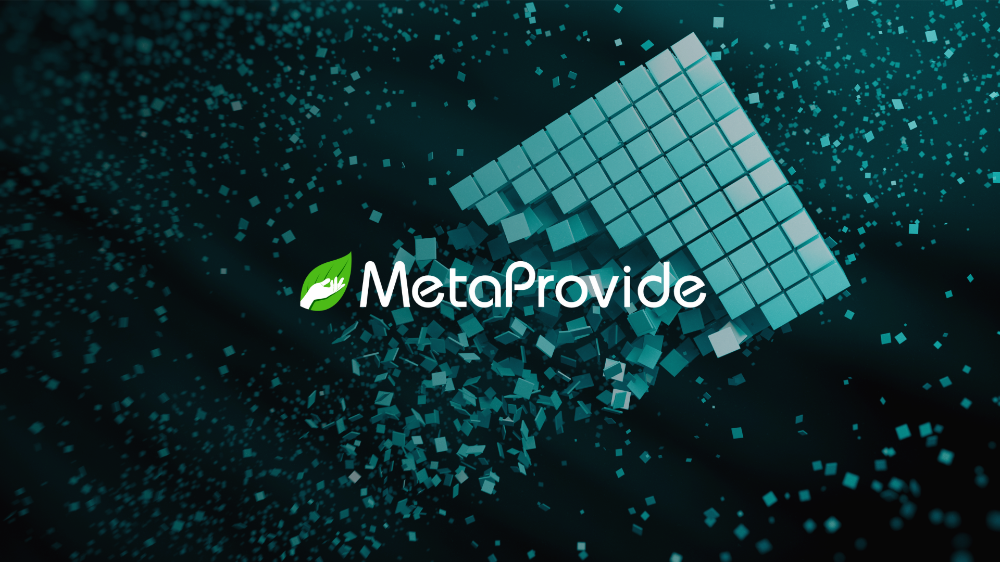

The Illusion of Security: Centralised Data in the Modern Age

In today's digital world, the idea that centralised data is secure is increasingly being questioned. Despite advancements in cybersecurity, centralising data often creates a single point of vulnerability. The rise in data breaches, cloud storage failures, unauthorised access incidents, data mining scandals, and policy changes by third-party providers highlights these inherent risks.
What is Centralised Data?
Centralised data typically means a third party controls your data, and not only that it's stored in just one place. It's often distributed across many servers with redundancies and backups. However, the key issue is the control and security measures applied by the central authority responsible for "safeguarding" it.
Data Breaches
Major data breaches are becoming alarmingly frequent. High-profile incidents like the Equifax breach, exposing the sensitive information of 147 million people, and the recent Twilio breach, affecting 33 million users, showcase the significant financial losses and erosion of public trust that can result from such breaches. This is to be taken seriously.
Cloud Storage Failures
Cloud storage is often seen as a secure solution for centralised data. However, failures are not uncommon. In 2019, a misconfigured AWS S3 bucket exposed the personal data of 100 million individuals, highlighting the vulnerabilities associated with cloud storage. The security of data stored in the cloud is only as strong as the configurations and measures implemented by the provider. In short, there is much truth in the statement that the meaning of 'cloud' equals "stored in somebody else's computer".
Unauthorised Access
Unauthorized access is another significant threat to centralised data. Even with robust security protocols, human error or insider threats can lead to breaches. The famous Snowden revelations historically demonstrated how insiders could exploit their access to gather and leak vast amounts of data, challenging the notion that centralised data repositories are inherently secure.
Data Mining and Policy Changes
The rise of data mining by corporations and policy changes by third-party providers further complicate the security landscape. Companies like Facebook have faced backlash for data mining practices compromising user privacy. Additionally, policy changes can retroactively affect data security, as users often have limited control over how their data is managed once it is centralised. Increasingly, providers are modifying policies to allow exposure to AI language learning models, posing huge potential risks to organisations where proprietary data is critical.
A Decentralised Solution: Introducing HejBit by MetaProvide:
To address these vulnerabilities, MetaProvide has introduced the HejBit. It works as a plugin for Nextcloud. This innovative solution allows users to store, share, and collaborate, using files as in a decentralised Dropbox alternative. Utilising a combination of Nextcloud functionality and the Swarm decentralised data network, organisations can benefit from a web2 user experience with the security and sovereignty of the highly distributed Swarm network.
HejBit ensures unparalleled data sovereignty by allowing users to own and control their data, safeguarding it from third-party access and centralised vulnerabilities.
By decentralising data storage, HejBit mitigates the risks associated with centralisation, providing a profoundly more secure alternative. Users retain absolute control over their information, removing the risk of unauthorised access and data breaches. Additionally, decentralisation elegantly minimizes the impact of cloud storage failures and also protects against policy changes by third-party providers, thus ensuring greater data security and privacy.
Nextcloud users are already familiar with the concept of data sovereignty, often employing self-hosted data solutions. The HejBit plugin drastically enhances this sovereignty, enabling users to mitigate the risks of self-hosted server loss, failure, or external shutdown. With HejBit, organisations can make their data truly unstoppable.
If you are not an existing Nextcloud user we can conveniently guide your organisation to a third-party Nextcloud solution enabling immediate use of the HejBit decentralisation plugin.